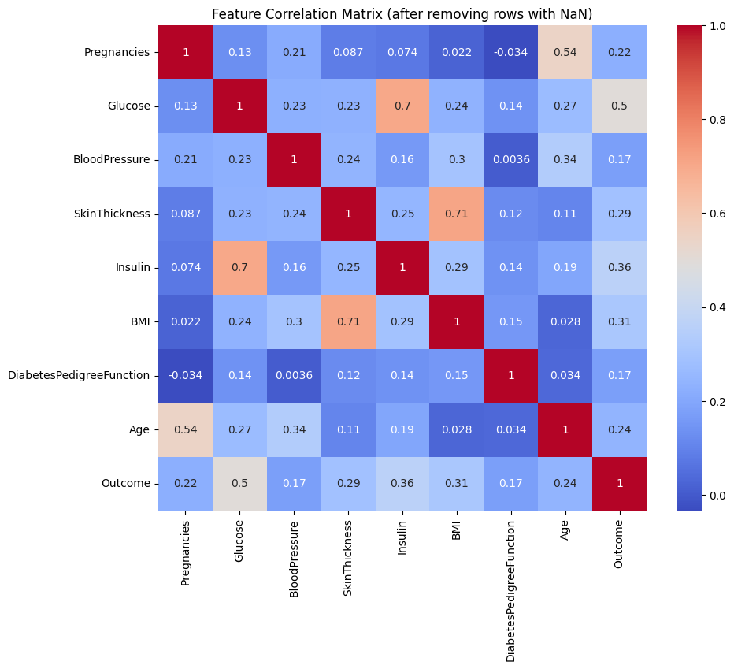
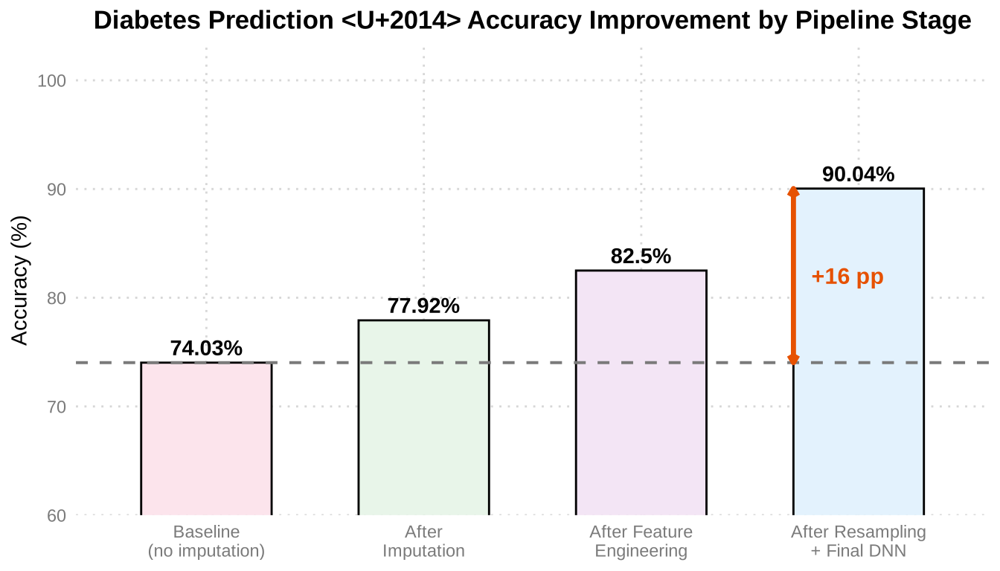
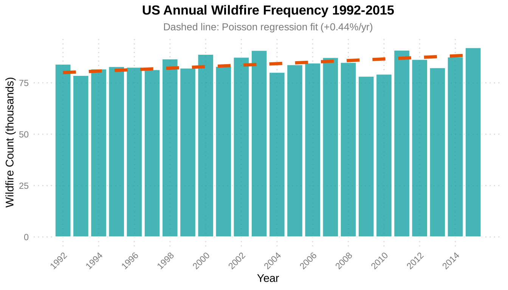
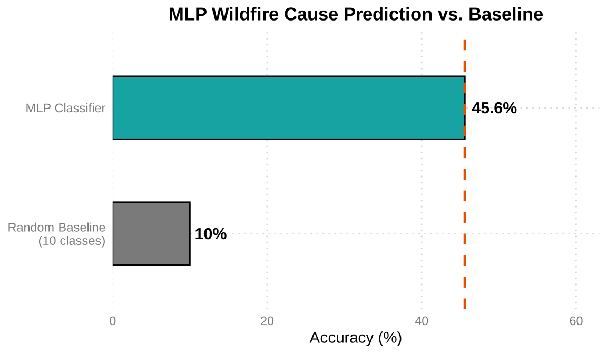
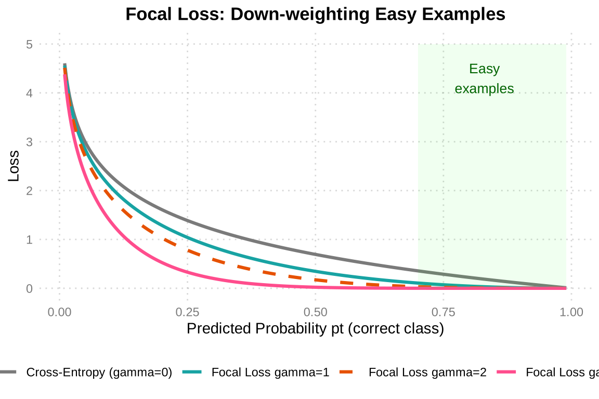
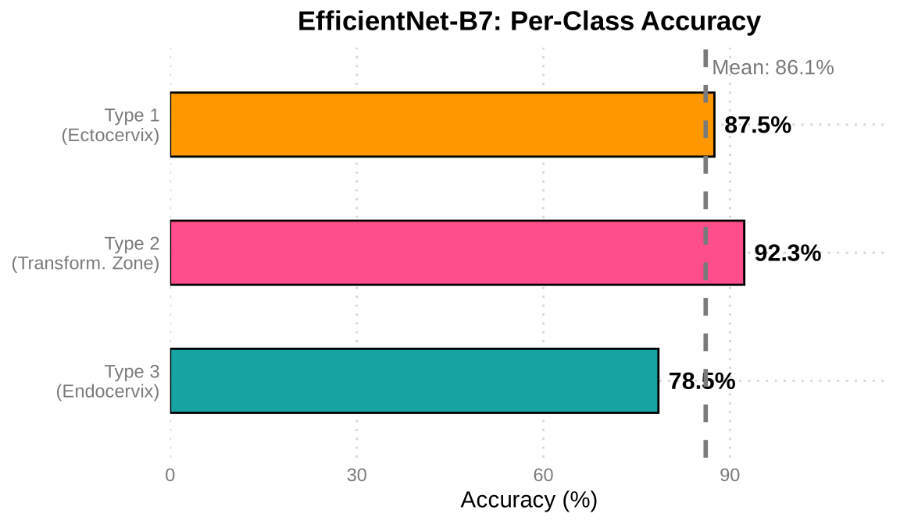

%%{init: {"theme": "base", "themeVariables": {"fontSize": "18px"}, "flowchart": {"padding": 35, "nodeSpacing": 25, "rankSpacing": 40}}}%%
flowchart TD
A["Raw Data 768×8 "] --> B["Mark Zeros as Missing "]
B --> C["Regression Imputation "]
C --> D["Feature Eng. + Resample "]
D --> E["Train / Val Split "]
E --> F["DNN 64→32→16→1 "]
F --> G["90.04% acc "]
style A fill:#E3F2FD,color:#1565C0,stroke:#90CAF9,stroke-width:2px
style B fill:#F5F5F5,color:#424242,stroke:#BDBDBD,stroke-width:2px
style C fill:#FFF3E0,color:#E65100,stroke:#FFCC80,stroke-width:2px
style D fill:#F3E5F5,color:#6A1B9A,stroke:#CE93D8,stroke-width:2px
style E fill:#F5F5F5,color:#424242,stroke:#BDBDBD,stroke-width:2px
style F fill:#E3F2FD,color:#1565C0,stroke:#90CAF9,stroke-width:2px
style G fill:#E8F5E9,color:#2E7D32,stroke:#A5D6A7,stroke-width:2px
機器學習與資料科學
作業
作業 1 — 糖尿病預測
任務： 使用 Pima Indians 糖尿病資料集預測糖尿病的發生，重點在於以迴歸填補處理缺失值、特徵工程與重新取樣，再訓練深度神經網路。
資料集： Pima Indians 糖尿病資料集 — 768 筆樣本、8 個特徵
方法： 迴歸填補 → 特徵工程 → 重新取樣 → DNN
流程總覽
流程說明： 原始資料在 Glucose、BMI 等欄位中含有「零值」，實際上代表缺失資料。我們以線性迴歸依序填補各欄位，接著進行特徵工程與重新取樣以平衡正負樣本。最後以 4 層 DNN 進行二元分類，準確率從基線 74% 提升至 90.04%。
探索性資料分析
Glucose、BMI、BloodPressure、SkinThickness 與 Insulin 中的零值視為缺失。移除含缺失值的列後，剩下 336 筆乾淨資料可用於擬合填補模型。

主要觀察： Glucose → Outcome 的相關係數為 0.50，是糖尿病最強的預測因子；SkinThickness ↔︎ BMI 達 0.71，因此可用 BMI 填補 SkinThickness；Insulin ↔︎ Glucose 達 0.70，因此可用 Glucose 填補 Insulin；Age ↔︎ Pregnancies 為 0.54，符合生理上的預期。
缺失值填補
%%{init: {"theme": "base", "themeVariables": {"fontSize": "18px"}, "flowchart": {"padding": 35}}}%%
flowchart TD
A["Outcome "]
B["Glucose "]
C["BMI "]
D["Insulin "]
E["SkinThickness "]
F["Age "]
G["BloodPressure "]
A -->|"predicts"| B
B -->|"predicts"| C
B -->|"predicts"| D
C -->|"predicts"| E
B -->|"predicts"| E
F -->|"predicts"| G
C -->|"predicts"| G
style A fill:#FFF3E0,color:#E65100,stroke:#FFCC80,stroke-width:2px
style B fill:#E3F2FD,color:#1565C0,stroke:#90CAF9,stroke-width:2px
style C fill:#E8F5E9,color:#2E7D32,stroke:#A5D6A7,stroke-width:2px
style D fill:#FCE4EC,color:#C62828,stroke:#F48FB1,stroke-width:2px
style E fill:#F3E5F5,color:#6A1B9A,stroke:#CE93D8,stroke-width:2px
style F fill:#FFF3E0,color:#E65100,stroke:#FFCC80,stroke-width:2px
style G fill:#E0F2F1,color:#00695C,stroke:#80CBC4,stroke-width:2px
填補順序： 以相關性最高的已知欄位作為自變數，依序套用線性迴歸：Outcome → Glucose → BMI → Insulin / SkinThickness → BloodPressure。每一步只使用原本就存在或已完成填補的欄位作為預測變數。
# Fill Glucose using Outcome
X_train = df_non_missing[['Outcome']]
y_train = df_non_missing['Glucose']
model = LinearRegression()
model.fit(X_train, y_train)
# Fill BMI using Glucose
X_train = df_non_missing[['Glucose']]
y_train = df_non_missing['BMI']
# Fill Insulin using BMI + Glucose
X_train = df_non_missing[['BMI', 'Glucose']]
y_train = df_non_missing['Insulin']
# Fill BloodPressure using Age + BMI
X_train = df_non_missing[['Age', 'BMI']]
y_train = df_non_missing['BloodPressure']模型架構
%%{init: {"theme": "base", "themeVariables": {"fontSize": "18px"}, "flowchart": {"padding": 35}}}%%
flowchart LR
I["Input 8+ feat "] --> L1["Dense 64 ReLU "] --> L2["Dense 32 ReLU "] --> L3["Dense 16 ReLU "] --> O["Dense 1 Sigmoid "]
style I fill:#E3F2FD,color:#1565C0,stroke:#90CAF9,stroke-width:2px
style L1 fill:#E3F2FD,color:#1565C0,stroke:#90CAF9,stroke-width:2px
style L2 fill:#E3F2FD,color:#1565C0,stroke:#90CAF9,stroke-width:2px
style L3 fill:#E3F2FD,color:#1565C0,stroke:#90CAF9,stroke-width:2px
style O fill:#E8F5E9,color:#2E7D32,stroke:#A5D6A7,stroke-width:2px
model = Sequential()
model.add(Dense(64, input_dim=X_train.shape[1], activation='relu'))
model.add(Dense(32, activation='relu'))
model.add(Dense(16, activation='relu'))
model.add(Dense(1, activation='sigmoid'))訓練設定
model.compile(
loss='binary_crossentropy',
optimizer='adam',
metrics=['accuracy']
)
model.fit(X_train, y_train, epochs=10, batch_size=32, validation_split=0.2)結果
| 指標 | 數值 |
|---|---|
| 基線準確率（未填補） | 74.03% |
| 最終準確率（填補 + 特徵工程 + 重新取樣） | 90.04% |
| 提升幅度 | +16.01 pp |

準確率分析： 基線（直接丟棄缺失值）只有 74.03%。經迴歸填補後提升至 77.92%，特徵工程再增加約 5 pp，最後重新取樣 + DNN 達到 90.04%，總共提升 +16 pp。灰色虛線標示基線參考值，橘色箭頭表示整體增益。
作業 2 — 美國野火分析
任務： 分析 188 萬筆美國野火紀錄，以 Poisson 迴歸建模年度發生頻率的趨勢，並以多層感知器（MLP）預測野火起因。
資料集： 美國野火（1992–2015）— 1,880,465 筆紀錄，Kaggle
方法： Poisson 迴歸（趨勢分析）+ MLP（起因分類）
Poisson 迴歸
將每年的野火數量建模為年份的函數，以估計長期趨勢。
import statsmodels.api as sm
import statsmodels.formula.api as smf
poisson_model = smf.glm(
formula='Count ~ FIRE_YEAR',
data=fire_counts,
family=sm.families.Poisson()
).fit()
print(poisson_model.summary())
Poisson 趨勢： 以年份為自變數擬合的 Poisson 迴歸估計，年度野火頻率每年增加 +0.44%。橘色虛線為迴歸擬合線，藍綠色長條為各年的實際數量。
MLP 模型架構
特徵：FIRE_SIZE、LATITUDE、LONGITUDE、FIRE_YEAR、MONTH
%%{init: {"theme": "base", "themeVariables": {"fontSize": "18px"}, "flowchart": {"padding": 35}}}%%
flowchart LR
F["5 Features "] --> D1["Dense 64 ReLU "] --> DR1["Dropout 0.3 "] --> D2["Dense 64 ReLU "] --> DR2["Dropout 0.3 "] --> O["Softmax → N cls "]
style F fill:#E3F2FD,color:#1565C0,stroke:#90CAF9,stroke-width:2px
style D1 fill:#E3F2FD,color:#1565C0,stroke:#90CAF9,stroke-width:2px
style DR1 fill:#FFF3E0,color:#E65100,stroke:#FFCC80,stroke-width:2px
style D2 fill:#E3F2FD,color:#1565C0,stroke:#90CAF9,stroke-width:2px
style DR2 fill:#FFF3E0,color:#E65100,stroke:#FFCC80,stroke-width:2px
style O fill:#E8F5E9,color:#2E7D32,stroke:#A5D6A7,stroke-width:2px
架構說明： 簡單的 MLP，由兩層 Dense 64 + Dropout 0.3 組成。藍色 = Dense 層、橘色 = Dropout 正則化、綠色 = Softmax 輸出（10 種野火起因類別）。
model = Sequential()
model.add(Dense(64, input_dim=X_train.shape[1], activation='relu'))
model.add(Dropout(0.3))
model.add(Dense(64, activation='relu'))
model.add(Dropout(0.3))
model.add(Dense(num_classes, activation='softmax'))
model.compile(
loss='categorical_crossentropy',
optimizer='adam',
metrics=['accuracy']
)訓練設定
model.fit(X_train, y_train, epochs=20, batch_size=32, validation_split=0.2)
# Train/Test Split: 70/30結果
| 指標 | 數值 |
|---|---|
| 野火起因預測準確率 | ~45.6% |
| Poisson 迴歸趨勢 | 每年 +0.44% |
| 處理的總紀錄數 | 1,880,465 |

結果分析： 10 類隨機猜測的基線為 10%，而 MLP 達到約 45.6%，遠優於隨機，但仍有改進空間。分類準確率偏低反映了僅憑地理位置（經緯度）與時間（年、月）判斷野火起因的先天困難 – 許多起因（人為 vs. 閃電）在空間分布上高度重疊。
期末專案 — 子宮頸癌篩檢
任務： 將子宮頸影像依轉化區（transformation zone）的可見程度分為三型（Type 1、2、3），使用 EfficientNet-B7 遷移學習，並以 Focal Loss 處理類別不平衡。
資料集： Intel & MobileODT Cervical Cancer Screening（Kaggle）— 三類別影像分類
方法： EfficientNet-B7（ImageNet 預訓練、微調）+ Focal Loss + 資料增強
遷移學習策略
%%{init: {"theme": "base", "themeVariables": {"fontSize": "18px"}, "flowchart": {"padding": 35}}}%%
flowchart LR
A["Pretrained EfficientNet-B7 "] --> B["Freeze Backbone "] --> C["Classifier → 3 cls "] --> D["Focal Loss γ=2 "] --> E["Type 1/2/3 "]
style A fill:#E3F2FD,color:#1565C0,stroke:#90CAF9,stroke-width:2px
style B fill:#F5F5F5,color:#424242,stroke:#BDBDBD,stroke-width:2px
style C fill:#FFF3E0,color:#E65100,stroke:#FFCC80,stroke-width:2px
style D fill:#F3E5F5,color:#6A1B9A,stroke:#CE93D8,stroke-width:2px
style E fill:#E8F5E9,color:#2E7D32,stroke:#A5D6A7,stroke-width:2px
遷移學習策略： 先凍結 ImageNet 預訓練的 EfficientNet-B7 骨幹作為特徵萃取器，只訓練新加入的分類頭。以 Focal Loss 處理 Type 1/2/3 之間的樣本不平衡。
模型架構
from torchvision.models import efficientnet_b7, EfficientNet_B7_Weights
model = efficientnet_b7(weights=EfficientNet_B7_Weights.IMAGENET1K_V1)
num_features = model.classifier[1].in_features
model.classifier[1] = nn.Linear(num_features, num_classes) # num_classes = 3
model = model.to(device)Focal Loss 實作
Focal Loss 降低簡單樣本的權重，讓訓練聚焦於困難、被誤分類的樣本 – 對類別分布不平衡的情況特別有用。

Focal Loss 原理： gamma=0 時等同於標準交叉熵。gamma 越大，對「已正確分類的簡單樣本」（右側綠色區域）的懲罰越小，讓模型專注於學習困難樣本。本專案使用 gamma=2（橘色虛線）。
class FocalLoss(nn.Module):
def __init__(self, alpha=1, gamma=2, reduction="mean"):
super(FocalLoss, self).__init__()
self.alpha = alpha
self.gamma = gamma
self.reduction = reduction
def forward(self, inputs, targets):
ce_loss = nn.CrossEntropyLoss(reduction="none")(inputs, targets)
pt = torch.exp(-ce_loss)
focal_loss = self.alpha * (1 - pt) ** self.gamma * ce_loss
if self.reduction == "mean":
return focal_loss.mean()
elif self.reduction == "sum":
return focal_loss.sum()
return focal_loss
criterion = FocalLoss(alpha=1, gamma=2)訓練設定
optimizer = optim.Adam(model.parameters(), lr=0.001)
num_epochs = 20
batch_size = 32
for epoch in range(num_epochs):
model.train()
for inputs, labels in train_loader:
inputs, labels = inputs.to(device), labels.to(device)
optimizer.zero_grad()
outputs = model(inputs)
loss = criterion(outputs, labels)
loss.backward()
optimizer.step()結果
| 類別 | 說明 | 準確率 |
|---|---|---|
| Type 1 | 子宮頸外口（轉化區完全可見） | 87.5% |
| Type 2 | 轉化區部分可見 | 92.3% |
| Type 3 | 子宮頸內口（轉化區不可見） | 78.5% |

分類結果分析： Type 2（轉化區部分可見）因特徵最鮮明，準確率最高，達 92.3%。Type 3（轉化區不可見）最低，為 78.5%，因為缺乏可辨識的表面結構特徵，分類最困難。平均準確率為 86.1%（灰色虛線）。Focal Loss 有效提升了少數類別的學習表現。